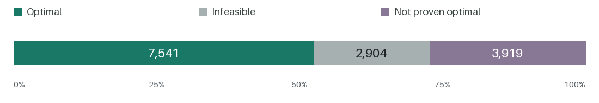

COMPUTATIONAL CORRECTION / VERSION 1.0.0 / 8 OCTOBER 2026
LoRP: Corrected Results and Code
A corrected branch-and-price implementation, benchmark results and accompanying code for the location-or-routing problem.
All 11,460 reported feasible incumbent solutions were independently checked. Optimality is assessed within the stated numerical tolerances.
Computational Results
Results are available for all 14,364 computational settings: 7,541 were solved to optimality, 2,904 were classified as infeasible, and 3,919 remain without an optimality proof.

Download computational results (CSV)
The CSV contains per-setting objectives, lower bounds, optimality gaps, runtimes, termination reasons and other computational statistics.
Use final_outcome for the final classification. Original solver statuses and actual runtimes are preserved in the CSV. Empty values are unavailable.
Corrections
This correction concerns Arslan (2021), and the standard-LoRP comparisons in Haghi et al. (2023). The latter paper’s partial and decaying coverage experiments are not reassessed here.
- The B&P algorithm in Arslan (2021) used a pulse algorithm implementation by Lozano et al. (2016) for solving the pricing problem that was later found to include a bug. In exceptional cases, it was missing feasible negative-reduced-cost routes, potentially overstating lower bounds and leading to incorrect optimality claims.
- Additionally, the ALNS comparisons in Haghi et al. (2023) used a coverage radius of
R+0.06rather than the statedR, enlarging the feasible region slightly, and this reduced objective function values in few instances. The B&P algorithm used in these comparisons therefore did not use the same instance definitions as the original B&P experiments, so their reported results are not directly comparable. - For the standard LoRP studied in Arslan (2021) and Haghi et al. (2023), please use the corrected per-instance results released here. These should be used in place of the B&P reference results and associated optimality claims reported in Tables A.6–A.12 of the online appendix to Haghi et al. (2023). The partial and decaying coverage experiments in that paper are not reassessed here.
Code, Data and Reproduction
The new Java + CPLEX branch-and-price implementation and pulse pricing algorithm were written independently. The download contains the Java solver, benchmark inputs, an example configuration and build instructions.
This solver code and webpage were generated using ChatGPT and AI-assisted tools, then reviewed and tested by Okan Arslan.
Download Solver Code and Benchmark Data (ZIP)
Build and Run Instructions · Pricing Algorithm · Data Dictionary and Limits
Detailed Solver Reports save each run’s status, bounds and any incumbent at three hours and when the run ends. These are two reports from the same run, not additional experiments. Infeasibility Evidence covers all 2,904 infeasible settings, 82 of which have exhaustive proofs, while the other 2,822 instances include the solver’s infeasibility reports.
Compile and run the Java source directly using the build instructions. A compatible JDK and a separately licensed CPLEX installation are required; Python is not. The solver code may be modified under the MIT license. CPLEX binaries and credentials are excluded.